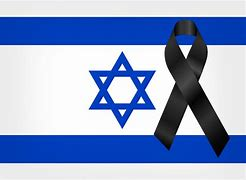

A guerra em Israel contra o Hamas chegou ao 25º dia nesta terça-feira (31), com 300 novos alvos atingidos pelas Forças de Defesa de Israel, incluindo ataques em posições do Hezbollah no Líbano em resposta à ofensiva feita pelo grupo.

O Ministério de Relações Exteriores da Turquia divulgou um comunicado de repúdio ao bombardeio realizado pelas Forças de Defesa lideradas pelo primeiro-ministro de Israel, Benjamin Netanyahu, ao Hospital Oncológico da Amizade Turco-Palestino em Gaza. O ataque ocorreu ontem (30) e, até o momento, não houve confirmação oficial de mortes por parte dos governos…
da Turquia, mostra o terceiro andar do hospital danificado com fumaça saindo do prédio. Também há relatos que o último pavimento foi atingido pelos mísseis.
Os ataques aéreos israelenses em Gaza atingiram repetidamente hospitais. Também nesta segunda-feira, os mísseis israelenses atingiram áreas próximas dos hospitais Al-Shifa e Al-Quds. "Não pode haver justificação para tal ataque realizado apesar de todas as informações necessárias, incluindo as coordenadas da instituição terem sido previamente compartilhadas com as autoridades israelenses", argumentou o governo turco…

Durante a madrugada, as Forças de Defesa de Israel afirmaram terem atingido uma série de posições do Hezbollah no sul do Líbano. A ação é resposta a disparos de morteiros e a um ataque de mísseis no norte de Israel. A última operação também incluiu uma lista de 300 alvos atingidos, incluindo lançadores de mísseis guiados antitanque e de foguetes, entradas de túneis e complexos militares do Hamas…
A guerra entre Israel e o Hamas é um conflito bélico que começou no dia 7 de agosto após um ataque do grupo radical Hamas a Israel. O motivo da guerra é uma disputa por territórios na região da faixa de Gaza1. O saldo de mortos já ultrapassa 3.500 pessoas, sendo a maioria palestinos. Israel intensificou os ataques aéreos e terrestres contra o Hamas, capturando e matando dois ministros do grupo.
